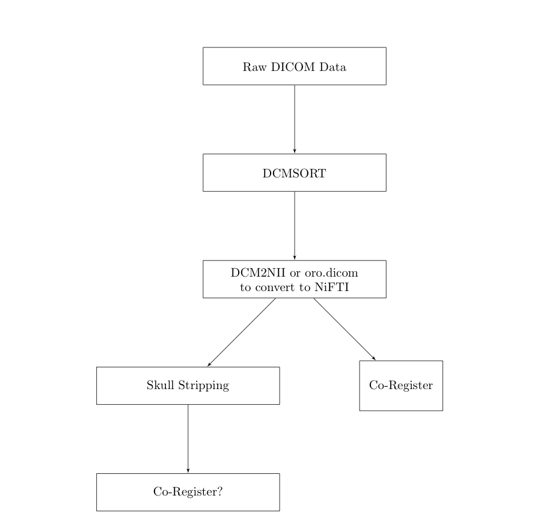
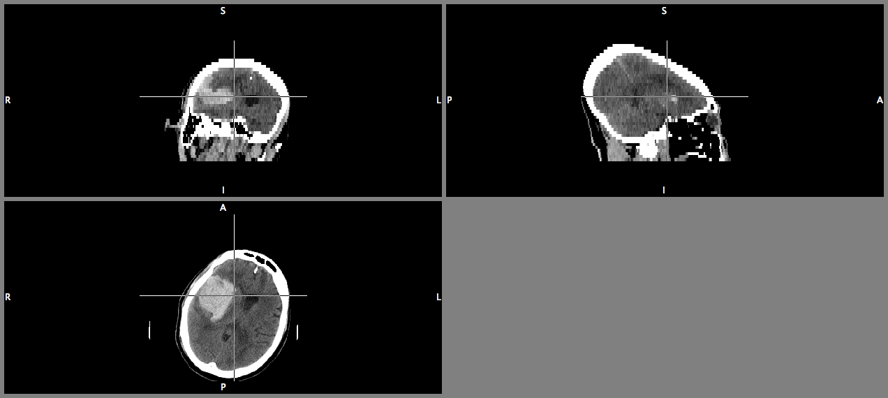

- Registration to a template
- 3D Histogram of Stroke Prevalence
- Longitudinal image registration with CT
- Use some standard or novel methods on CT data for segmentation
- Pipeline
Stroke Imaging Data- What I have learned
John Muschelli
@StrictlyStat (github: muschellij2)
Johns Hopkins Bloomberg School of Public Health
Goals
Registration
- Chris Rorden has released a Clinical Toolbox
- Has a CT Template!
- Uses SPM to do spatial co-registration "Normalization".
- Must mask out the lesion / stroke.
SPM
How many patients
- CLEAR IVH - 100 patients
- MISTIE and ICES - 144 patients
- CLEAR III - currently 350 patients (to be 500)
- MISTIE III - 500 patients (just funded)
Data Types
- CT Data - all ROIs are done on axial based CT - also have some saggital and coronal
- Have follow-up scans that have no blood, but still deformation
What's done - Flow
After Data has been exported from OsiriX: 
CT Image - I have big blood and I can not lie

Gantry Tilt - Cone heading

Gantry Tilt - It's a Brain!